Experience the majestic heritage of the Srivijaya Empire, where tradition meets the flowing grace of the Musi River.
Explore more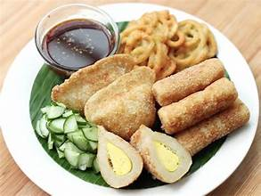
Olahan ikan bercampur tepung tapioka yang kenyal dan gurih, disajikan dengan kuah cuko asam pedas manis sebagai ikon kuliner Sumatera Selatan
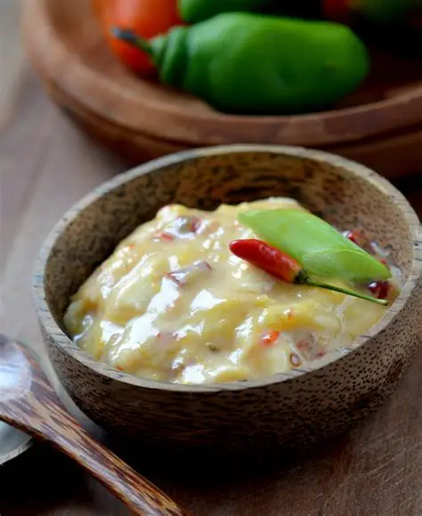
Fermentasi daging durian yang beraroma tajam dan bercita rasa unik, sering dijadikan bumbu masakan tradisional.

Berbahan dasar buah bacang yang asam segar, dipadukan dengan cabai dan rempah untuk rasa pedas menyengat.
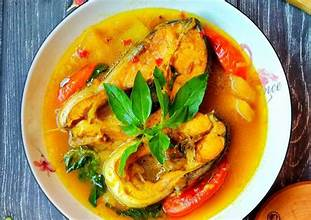
Masakan berkuah asam pedas berbahan ikan atau daging, dimasak dengan rempah khas Sumatera Selatan yang segar dan menggugah selera
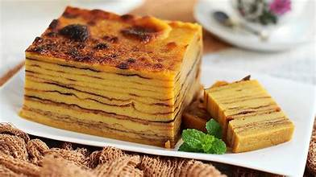
Kue tradisional berbahan tepung beras dan gula merah, bertekstur lembut dengan rasa manis legit yang biasa hadir di acara adat
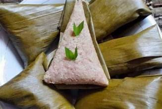
Makanan tradisional dari tepung beras ketan yang dibentuk memanjang, dimasak dengan santan dan gula sehingga menghasilkan rasa manis gurih.
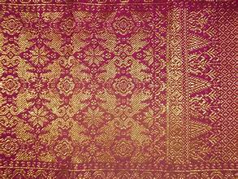
Kain tradisional yang ditenun dengan benang emas atau perak, melambangkan kemewahan dan kejayaan budaya Sriwijaya

seni teater rakyat yang memadukan drama, musik, dan tari untuk mengisahkan legenda atau cerita kerajaan
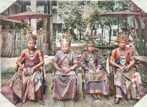
istilah bebiye merupakan sebutan lokal untuk Pajak Bumi dan Bangunan (PBB) pada masa lampau di Kabupaten OKI dan OKU
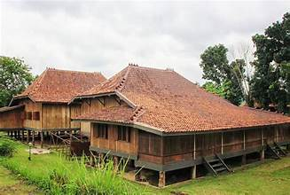
Rumah adat berbentuk limas bertingkat yang sarat filosofi dan menunjukkan status sosial pemiliknya
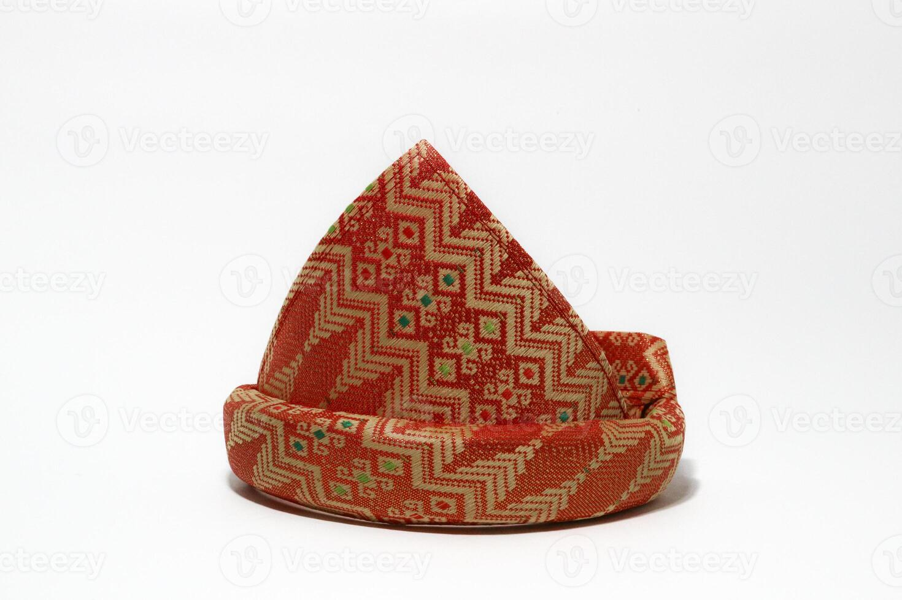
Ikat kepala tradisional berbahan dasar songket, yang dipakai sebagai simbol kehormatan dan identitas budaya.
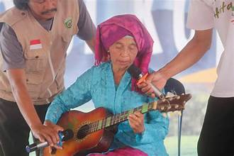
Istilah untuk irama musik dengan petikan gitar tunggal yang berkembang di Sumatera Selatan
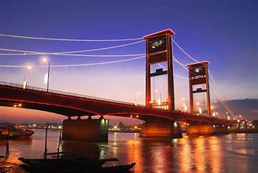
ikon Palembang yang membentang di atas Sungai Musi.
Gunung berapi aktif di Pagar Alam dengan panorama perkebunan teh dan udara sejuk yang memikat wisatawan
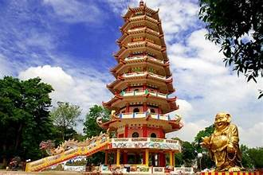
Pulau legendaris di Sungai Musi yang terkenal dengan pagoda sembilan lantai dan kisah cinta Tan Bun An
Danau terbesar kedua di Sumatera yang dikelilingi pegunungan, menawarkan keindahan alam dan budaya masyarakat sekitar

Bukit Jempol di Kabupaten Lahat memiliki bentuk unik menyerupai ibu jari yang menunjuk ke langit.Untuk mencapai puncaknya, pengunjung perlu melakukan trekking ringan. Namun, rasa lelah akan terbayar dengan pemandangan luar biasa berupa hamparan perbukitan hijau yang luas.
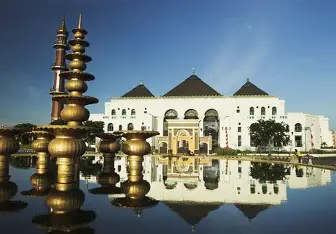
Masjid bersejarah yang memadukan arsitektur Melayu, Cina, dan Eropa, menjadi pusat spiritual dan budaya kota
Click on the golden markers to explore key landmarks